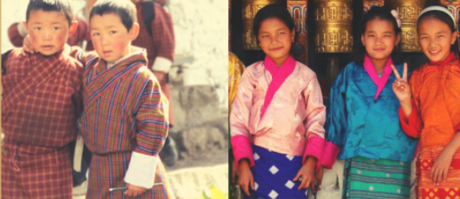
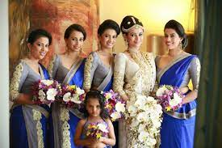

Bhutan - Gho and Kira

The Bhutanese dresses Gho for men and Kira for women are extremely popular in the country. Several
individuals, even in urban establishments prefer wearing these traditional clothes on a daily basis.
These dresses are made from thick woollen materials and are helpful in the cold and windy environment
that Bhutan has to offer.
Sri Lanka - Sari and Sarong

The traditional Kandyan saree (osaria) is the popular attire in Sri Lanka and is worn by women for all
ranges of events. Some wear a saree on a daily basis, or because their work uniform calls for a saree.
School teachers and office women wear sarees, as well as tea pluckers when it is their custom.